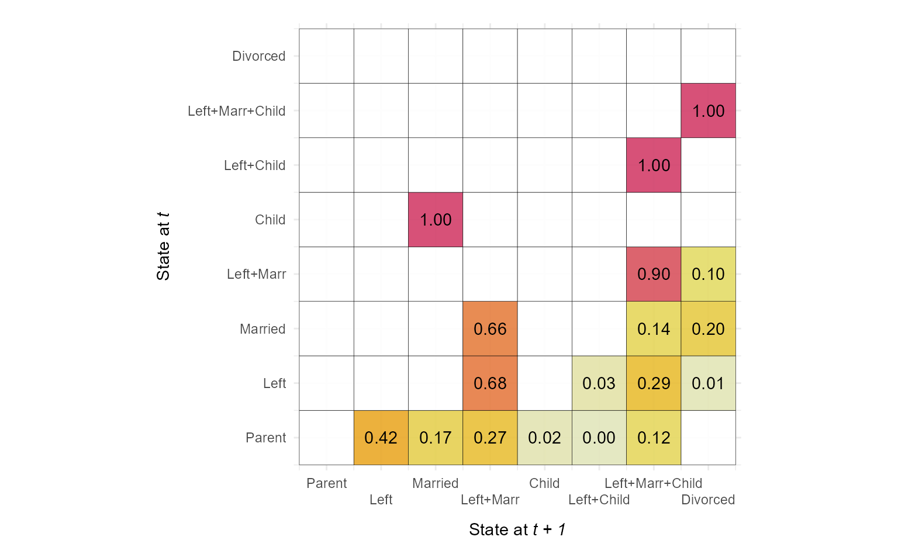
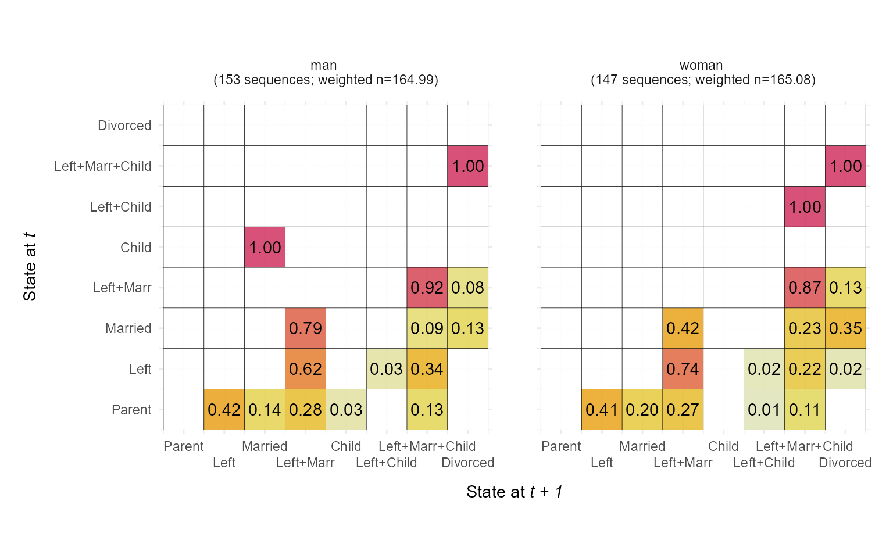
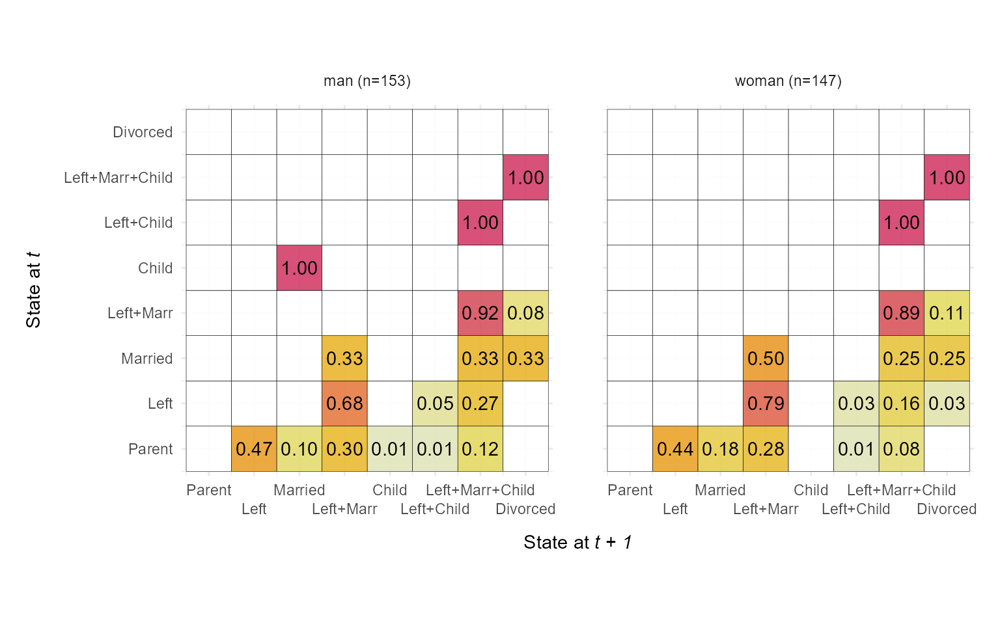

Function for plotting transition rate matrix of sequence states internally computed by TraMineR::seqtrate (Gabadinho et al. 2011)
.
Plot is generated using ggplot2 (Wickham 2016)
.
Usage
ggseqtrplot(
seqdata,
dss = TRUE,
group = NULL,
no.n = FALSE,
weighted = TRUE,
with.missing = FALSE,
labsize = NULL,
axislabs = "labels",
x_n.dodge = 1,
facet_ncol = NULL,
facet_nrow = NULL
)Arguments
- seqdata
State sequence object (class
stslist) created with theTraMineR::seqdeffunction.- dss
specifies if transition rates are computed for STS or DSS (default) sequences
- group
Grouping variable of length equal to the number of sequences. When not NULL, a distinct plot is generated for each level of group.
- no.n
specifies if number of (weighted) sequences is shown in grouped (faceted) graph
- weighted
Controls if weights (specified in
TraMineR::seqdef) should be used. Default isTRUE, i.e. if available weights are used- with.missing
Specifies if missing state should be considered when computing the transition rates (default is
FALSE).- labsize
Specifies the font size of the labels within the tiles (if not specified ggplot2's default is used)
- axislabs
specifies if sequence object's long labels (default) or the state names from its alphabet attribute should be used.
- x_n.dodge
allows to print the labels of the x-axis in multiple rows to avoid overlapping.
- facet_ncol
Number of columns in faceted (i.e. grouped) plot
- facet_nrow
Number of rows in faceted (i.e. grouped) plot
References
Gabadinho A, Ritschard G, M昼㹣ller NS, Studer M (2011).
“Analyzing and Visualizing State Sequences in R with TraMineR.”
Journal of Statistical Software, 40(4), 1--37.
doi: 10.18637/jss.v040.i04
.
Wickham H (2016).
Ggplot2: Elegant Graphics for Data Analysis, Use R!, 2nd ed. 2016 edition.
Springer, Cham.
ISBN 978-3-319-24277-4, doi: 10.1007/978-3-319-24277-4
.
Examples
# ~~~~~~~~~~~~~~~~~~~~~~~~~~~~~~~~~~~~~~~~~~~~~~~~~~~~~~~~~~~~~~~~~~~~~~~~~~
# Examples from TraMineR::seqplot
library(TraMineR)
# biofam data set
data(biofam)
# We use only a sample of 300 cases
set.seed(10)
biofam <- biofam[sample(nrow(biofam),300),]
biofam.lab <- c("Parent", "Left", "Married", "Left+Marr",
"Child", "Left+Child", "Left+Marr+Child", "Divorced")
biofam.seq <- seqdef(biofam, 10:25, labels=biofam.lab, weights = biofam$wp00tbgs)
#> [>] 8 distinct states appear in the data:
#> 1 = 0
#> 2 = 1
#> 3 = 2
#> 4 = 3
#> 5 = 4
#> 6 = 5
#> 7 = 6
#> 8 = 7
#> [>] state coding:
#> [alphabet] [label] [long label]
#> 1 0 0 Parent
#> 2 1 1 Left
#> 3 2 2 Married
#> 4 3 3 Left+Marr
#> 5 4 4 Child
#> 6 5 5 Left+Child
#> 7 6 6 Left+Marr+Child
#> 8 7 7 Divorced
#> [>] sum of weights: 330.07 - min/max: 0/6.02881860733032
#> [>] 300 sequences in the data set
#> [>] min/max sequence length: 16/16
# ~~~~~~~~~~~~~~~~~~~~~~~~~~~~~~~~~~~~~~~~~~~~~~~~~~~~~~~~~~~~~~~~~~~~~~~~~~
# Basic transition rate plot (with adjusted x-axis labels)
ggseqtrplot(biofam.seq, x_n.dodge = 2)
#> [>] computing transition probabilities for states 0/1/2/3/4/5/6/7 ...

# Transition rate with group variable (with and without weights)
ggseqtrplot(biofam.seq, group=biofam$sex, x_n.dodge = 2)
#> [>] computing transition probabilities for states 0/1/2/3/4/5/6/7 ...
#> [>] computing transition probabilities for states 0/1/2/3/4/5/6/7 ...

ggseqtrplot(biofam.seq, group=biofam$sex, x_n.dodge = 2, weighted = FALSE)
#> [>] computing transition probabilities for states 0/1/2/3/4/5/6/7 ...
#> [>] computing transition probabilities for states 0/1/2/3/4/5/6/7 ...
